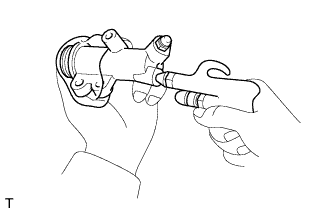

РАБОЧИЙ ЦИЛИНДР СЦЕПЛЕНИЯ (для моделей с 1GR-FE) > РАЗБОРКА |
| 1. СНИМИТЕ КОМПЛЕКТ РАБОЧЕГО ЦИЛИНДРА СЦЕПЛЕНИЯ |
Снимите защитный колпачок с корпуса цилиндра.
Извлеките шток из колпачка.
|  |
С помощью сжатого воздуха извлеките поршень вместе с пружиной из корпуса цилиндра.
Снимите с поршня 2 манжеты поршня цилиндра.
| 2. СНИМИТЕ ПРОКАЧНОЙ ШТУЦЕР РАБОЧЕГО ЦИЛИНДРА СЦЕПЛЕНИЯ |
Снимите прокачной штуцер с корпуса цилиндра.